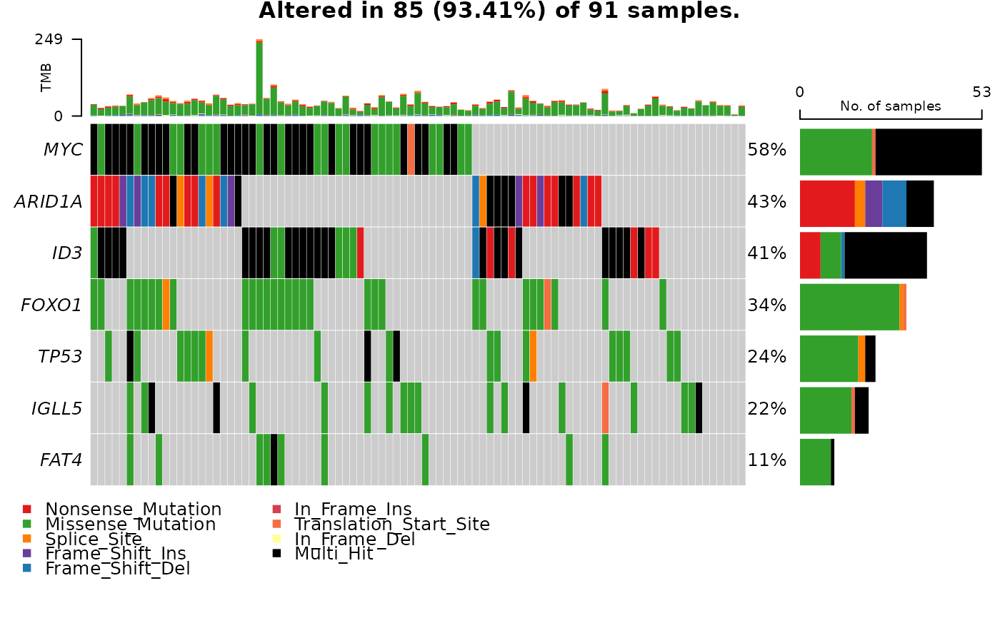

sanitize_maf_data.Rdsanitize_maf_data returns an oncomatrix of patient/gene data indicating only data needed to produce an oncoplot.
sanitize_maf_data(
mutation_maf_path,
mutation_maf_data,
output_oncomatrix,
genes_keep,
genes_drop = c()
)Provide either the full path to a MAF file.
Otherwise provide a data frame of the MAF data.
Optionally provide the path for your sanitized output file (otherwise it writes to the working directory).
Specify which genes you want to remain in the output. Make sure there are no duplicated elements in the vector.
Optionally specify which genes to drop (this doesn't mean all other genes will remain. Maftools decides that part).
The full path to the oncomatrix file (a matrix with Variant_Classification or Multi_Hit indicating coding mutation status per patient).
Write an oncomatrix from a MAF File for further plotting. This is meant to be run by individuals who have access to data sets to "sanitize" a subset of data for subsequent use by them or others who don't have permission to access the raw data. Example: User J has full permissions for ICGC data and has read permissions on a MAF file. User B needs to make some oncoplots and/or perform some statistical analysis on the frequency and assortment of mutations in that data set but don't need all the details. User J can run this function on a maf file and provide the path of the output to user B.
safe_oncomatrix_path = sanitize_maf_data(mutation_maf_data = grande_maf,
genes_keep = c("MYC", "ID3", "ARID1A",
"FOXO1", "TP53", "FAT4",
"IGLL5"))
#> -Validating
#> -Silent variants: 8209
#> -Summarizing
#> -Processing clinical data
#> --Missing clinical data
#> -Finished in 1.038s elapsed (2.436s cpu)
#> your data is in: /home/cmattsson/GAMBLR/cmattsson-dev/GAMBLR/docs/reference/onco_matrix.tsv
